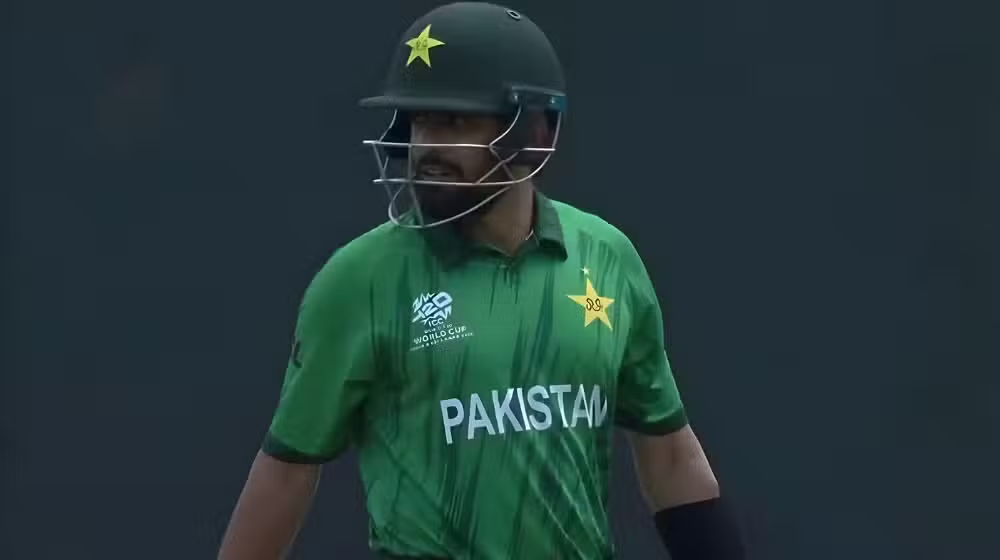

By Arooj Fatima | Published Feb 24, 2026 | 4:04 pm

Former South Africa captain Faf du Plessis has called for open and honest discussions between Pakistan star Babar Azam and head coach Mike Hesson, saying the team must find a way to unlock the batter's full potential in modern T20 cricket.
The comments come after Hesson, speaking before Pakistan's rain-washed match against New Zealand, pointed out that Babar Azam's strike rate during the powerplay at the recent T20 World Cup was below a run per ball.
Hesson suggested that Babar's best role in the team may now be in the middle overs rather than at the start of the innings.
Speaking on a local sports show, du Plessis described Babar as a “world-class player” but acknowledged that the fast evolution of T20 cricket has left him behind in terms of scoring tempo.
“I think all great players evolve their careers at different points,” du Plessis said. “We know Babar Azam as one of the world's best players for a long time. But T20 cricket has moved forward so quickly with strike rates that he's found himself a little behind.”
Du Plessis said Hesson's task is to find the best way to use Babar's skills. He noted that on difficult pitches, there is still value in a batter who scores at a strike rate between 120 and 130. However, he added that modern T20 cricket often demands much higher scoring rates.
Still, du Plessis said conditions matter. Pakistan played their World Cup matches on slower pitches in Sri Lanka rather than the flatter surfaces in India. On spin-friendly tracks, he said, a player like Babar can play an important anchoring role in the middle overs.
Babar's position as a national icon in Pakistan means his form is heavily scrutinized by fans and media. During the Asia Cup, selectors briefly dropped him from the team. Hesson had earlier stated that Babar would need to improve his strike rate and his game against spin during his time in the Big Bash League to earn his place back.
Despite a modest run in the BBL, Babar Azamwas recalled before the tournament ended and has kept his place in the squad.
Du Plessis stressed that progress must begin with honesty between player and coach.
“It starts with honesty,” he said. “Once you're honest in the conversation, everything flows from that. If you avoid the truth, it creates gaps that players can question.”
He said coaches must present the numbers clearly and explain what the team needs to succeed. When the statistics are laid out, players face a choice: resist the feedback or accept it and improve.
At 31, Babar Azam faces the challenge of evolving after a decorated career that includes 144 T20 internationals and a record 86 matches as Pakistan's T20 captain. Du Plessis said change can be uncomfortable, especially when past success makes it tempting to stay the same.
“You ask yourself, 'It's worked for me so far, why should I change?’” du Plessis said. “But you also have to ask where you can get better.”
Drawing from his own career, he explained how he identified weaknesses against spin and worked to improve, even when early attempts failed. Growth, he said, comes from staying committed during uncomfortable periods.
Du Plessis eventually found success by sticking to those changes in franchise leagues and bringing them back to international cricket.
He emphasized that the tone of conversations between coach and player is critical.
“If you are aggressive or pointing fingers, no one will accept that,” he said. “It has to feel like a partnership — how can we get the best out of you, and where can you improve for the good of the team?”